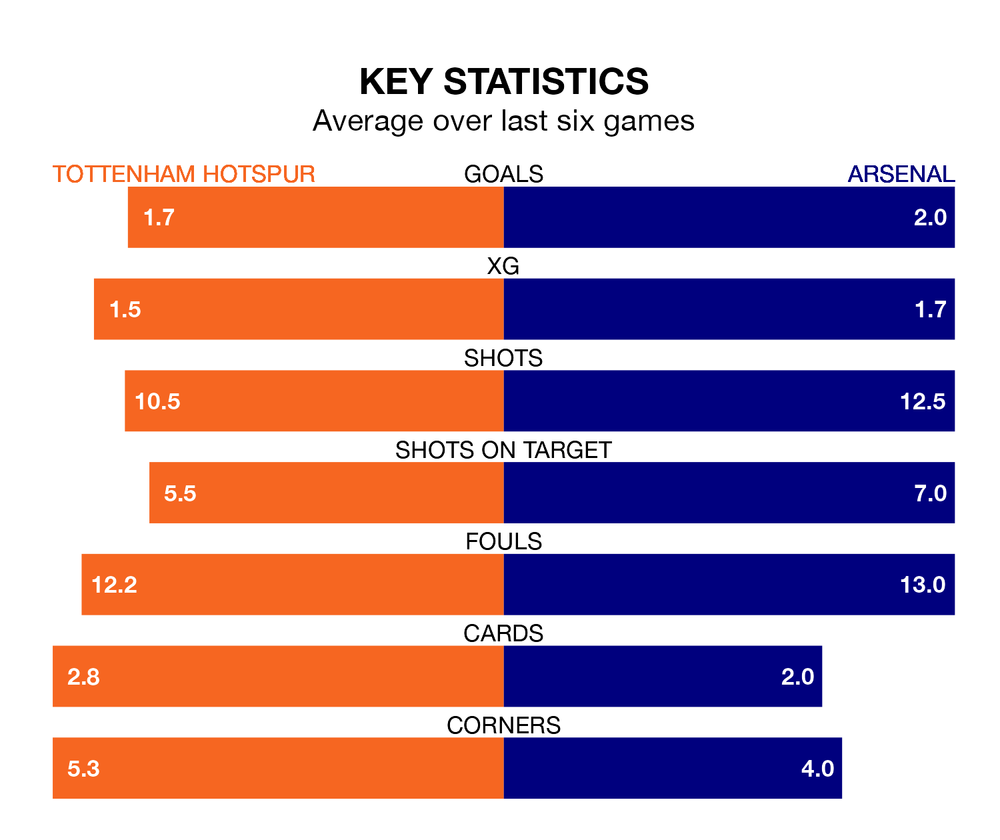

Arsenal are strong favourites to take all three points despite Tottenham Hotspur's home advantage in Sunday's early match at the Tottenham Hotspur Stadium.
*Betting Company* are offering odds of 1.84 on Arsenal sealing the win, with the visitors sitting first in the Premier League table.
Spurs, who are fifth in the league and 17 points behind the Gunners, are priced at 3.5 to win. A draw is set at 3.61.
With 82 goals in 34 games so far this season, Arsenal are the league's highest scorers with 2.4 goals per game. And they are conceding fewer than average, letting in 26 goals at a rate of 0.8 per game.
Spurs are also above average scorers, with 2.0 goals per game, compared to a league average of 1.6. They have conceded 1.5 goals per game.
In David Raya, the Gunners can rely on one of the league's safest pair of hands. He has kept 14 clean sheets in his 28 appearances this season, and no 'keeper has prevented the opposition scoring more often in the Premier League.
In Tottenham's net, Guglielmo Vicario has six clean sheets in 32 games. He has conceded a goal every 70 minutes, 70% more often than the 120 minutes between goals for Raya Martin.
In the last 10 years, Spurs and Arsenal have played each other on 21 occasions. They won seven each, and they drew seven times.
On average, Spurs scored 1.4 goals and the Gunners 1.4 in those matches.
Their last meeting was on September 24, when they played out a 2-2 draw.
The home team are in mixed form in the Premier League, with three wins and a draw from their last six games.
With four wins and a draw over that period, the visitors' form is better – they have taken 13 points from 18, compared to Spurs's 10.
Spurs's last match was on April 13, a 4-0 loss against Newcastle United.
Arsenal beat Chelsea 5-0 last time out, on Tuesday, with Ben White (two), Kai Havertz (two) and Leandro Trossard on the scoresheet.
Updated: 07:59 (UTC), 26/04/24